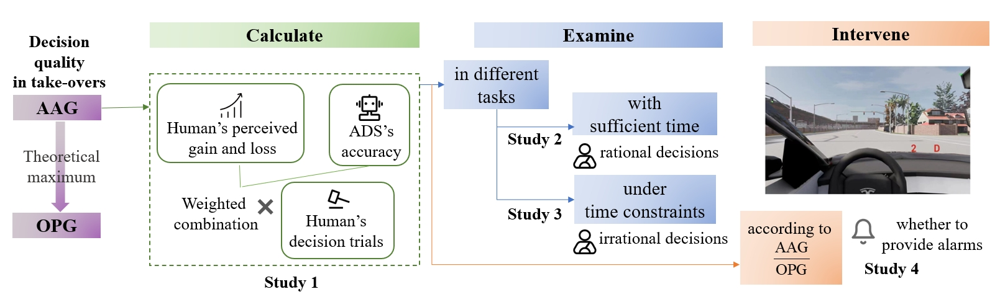
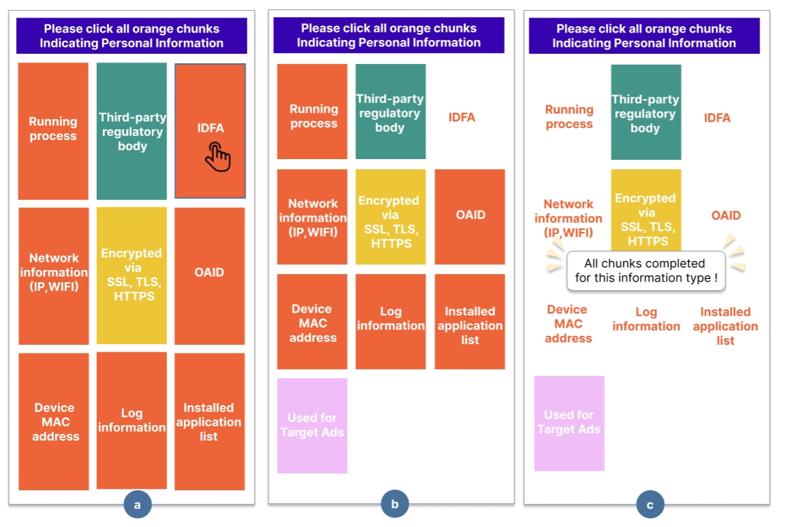
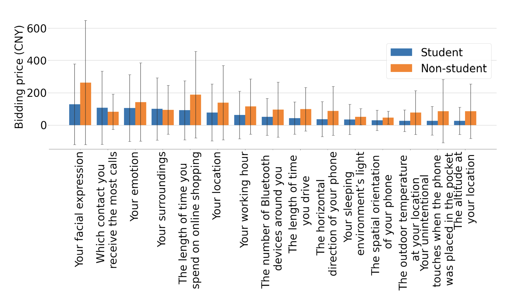
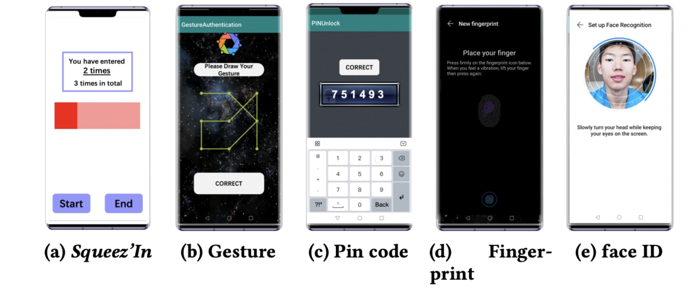

|
Zhang, Shuning (张书宁)
|
|
Ph.D.,
Institute for Network Sciences and Cyberspace, Tsinghua University
Beijing, China
Bachelor,
Computer Science and Technology, Tsinghua University
Beijing, China
E-mail: Zhang.sn314@gmail.com
|
About me
I received the B.S. degree from Tsinghua University major in Computer Science and Technology, in 2023. My research interest lies in Human-Computer Interaction (HCI), especially interaction techniques and Human-AI collaboration.
I am currently a Ph.D. student in Usable Privacy Lab (UP Lab), advised by Prof. Xin Yi, Tsinghua Univesity, Beijing, China. I focus on privacy and security problems in various interaction devices and interfaces.
During my studies, I gained valuable research experience through internships at several institutions: the University of California, Los Angeles (UCLA) with Prof. Nanyun Peng, Stanford University with Prof. James Landay, and the University of Washington (UW) with Prof. Anind K. Dey.
Specifically, my research interest focused on usable privacy and security issues during human-AI interaction, including investigating mitigation strategies of errors during human-AI collaboration (e.g., mistrust caused by hallucination of LLMs) and privacy issues when adopting AI system (e.g., smarthome personal assistant).
First or Co-first Author Publications
-

Shuning Zhang, et al.
Actual Achieved Gain and Optimal Perceived Gain: Modeling Human Take-over Decisions Towards Automated Vehicles' Suggestions
(CHI'25)
-

Shuning Zhang, et al.
PrivCAP: An Interactive CAPTCHA-like Technique to Facilitate Effective Comprehension of Mobile Privacy Policy
(CHI'25)
-

Lihua Fan, Shuning Zhang, et al.
Evaluating the Privacy Valuation of Personal Data on Smartphones
(IMWUT'24)
Paper
-

Xin Yi, Shuning Zhang, et al.
Squeez'In: Private Authentication on Smartphones based on Squeezing Gestures
(CHI'23)
Paper
Other Publications
Yongquan Hu, Jingyu Tang, Xinya Gong, Zhongyi Zhou, Shuning Zhang, et al. Vision-Based Multimodal Interfaces: A Survey and Taxonomy for Enhanced Context-Aware System Design. (CHI'25)
Sheng Zhao, Junrui Zhu, Shuning Zhang, et al. CoordAuth: Hands-Free Two-Factor Authentication in Virtual Reality Leveraging Head-Eye Coordination. (IEEE VR'25)
Xueyang Wang, Runyan Tian, Qiuyi Zeng, Chenye Tu, Shuning Zhang, et al. The Synergy of Dialogue and Art: Exploring the Potential of Multimodal AI Chatbots in Emotional Support. (CSCW'24 poster)
Yongquan Hu, Shuning Zhang, et al. Exploring Large-Scale Language Models to Evaluate EEG-Based Multimodal Data for Mental Health. (Ubicomp'24 Companion)
Jackie Yang, Karina Li, Daniel Wan Rosli, Zhang S, et al. ReactGenie: A Development Framework for Complex Multimodal Interactions Using Large Language Models. In Proceedings of the 2023 CHI Conference on Human Factors in Computing Systems (CHI '24)
Xin Yi, Yan Kong, Xueze Kang, Zhang S, et al. Exploring Interactive Gestures with Voice Assistant on HMDs in Social Situations. In 2024 IEEE virtual reality (VR)
Hsu I H, Huang K H, Zhang S, et al. TAGPRIME: A unified framework for relational structure extraction[C]//Proceedings of the 61st Annual Meeting of the Association for Computational Linguistics (Volume 1: Long Papers). 2023: 12917-12932.
Li S, Zhang S, Chen G, et al. Towards Benchmarking and Assessing Visual Naturalness of Physical World Adversarial Attacks[C]//Proceedings of the IEEE/CVF Conference on Computer Vision and Pattern Recognition. 2023: 12324-12333.
Full list of publications in Google Scholar.
Academic service
Reviewer
Program Chair
|